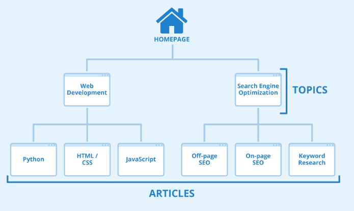

La estructura web, es la forma en la que está organizada una web mediante su enlazado interno, y mediante la cual, reparte su autoridad a sus páginas internas.
La estructura interna de los enlaces de una web es muy importante, ya que, la página con más fuerza de nuestra web (normalmente la home), repartirá su fuerza y autoridad de enlaces externos al resto de páginas.